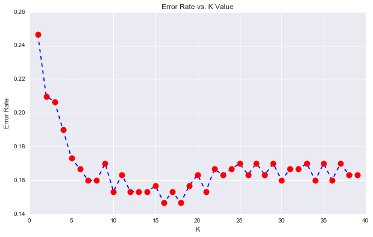
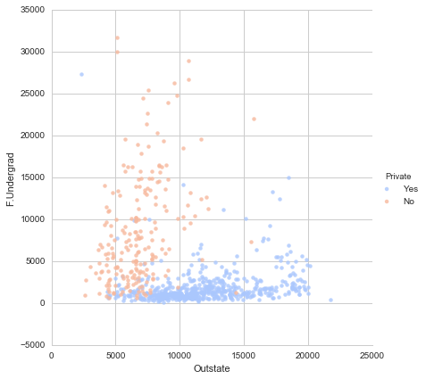
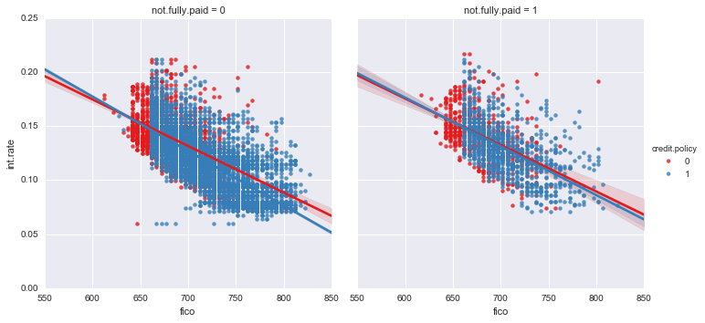

Data Analysis: Machine Learing and Big Data Analysis
DATA SCIENCE
- Tensorflow 2.0
- Keras
- Scikit-Learn
- Python Essentials-Numpy-Scipy-Matplotlib-Seaborn
- opencv-Image processing
- Programming in R-RStudio

Big Data Analytics
- Hadoop Ecosystem
- Apache Saprk
- Pyspark and sparkML
- Kafka Streaming
- Apache Pig-Hbase-Hive

Certifications:
To verify credentials please click here


Minor projects / Codes implemented:
ML-algorithms
- Predictor system for whether an ad-pop up in a website will be clicked or not
- KMeans Clustering to cluster Universities into to two groups: Private and Public
- A project that determines (classsification problem) whether a given person will default his loan payment.
- Prediction yearly Amount spent on an application by a user using Logistic Regression
- Yelp rating prediction: Fundamentals of NLP
- Improvement on the Iris dataset Classification problem
Big Data Analytics Projects using pyspark/spark ML
--- NOTE: Kaggle problem sets implemented in spark env (problem statement attached) --- - Identification of Hackers
- Binary Customer Churn
- Predcition of food quality
- Prediction of number of crew members required
R programming
- Boston Housing Problem
- Mnist-Fashion Classification
--- inspect page elements to view detailed problem statements :P ---
Results:
- 
-

-

-

-

- 
- 
Check out my gitHub repos for the source code: